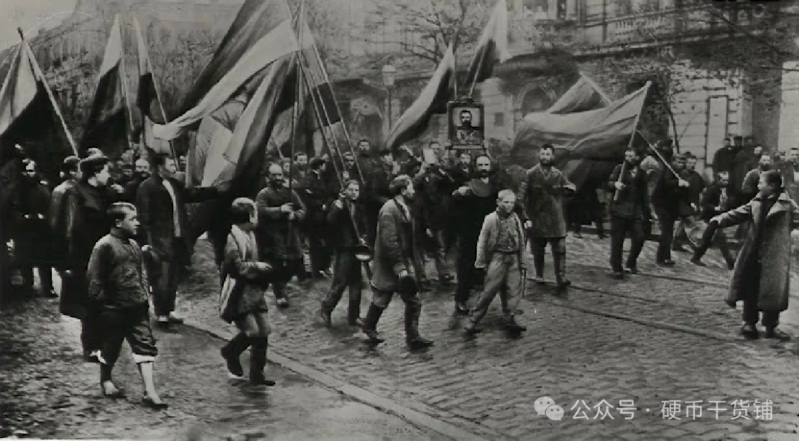
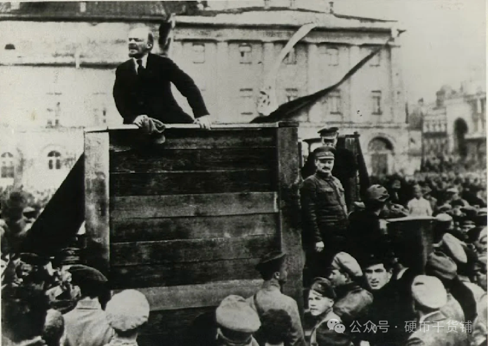
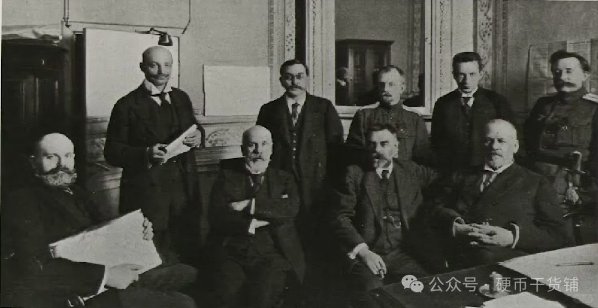
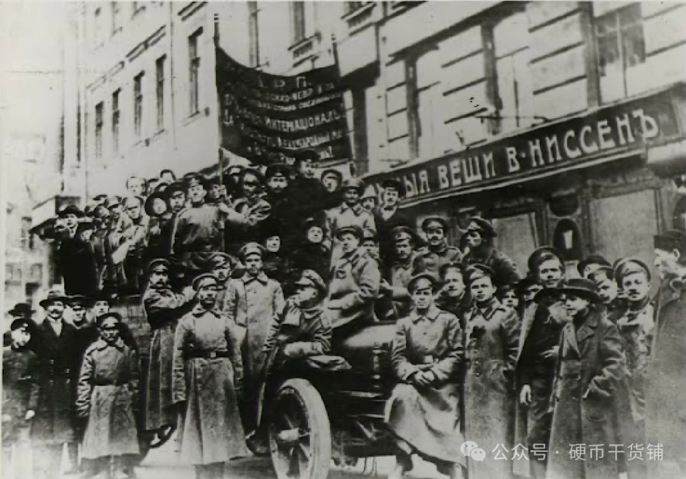
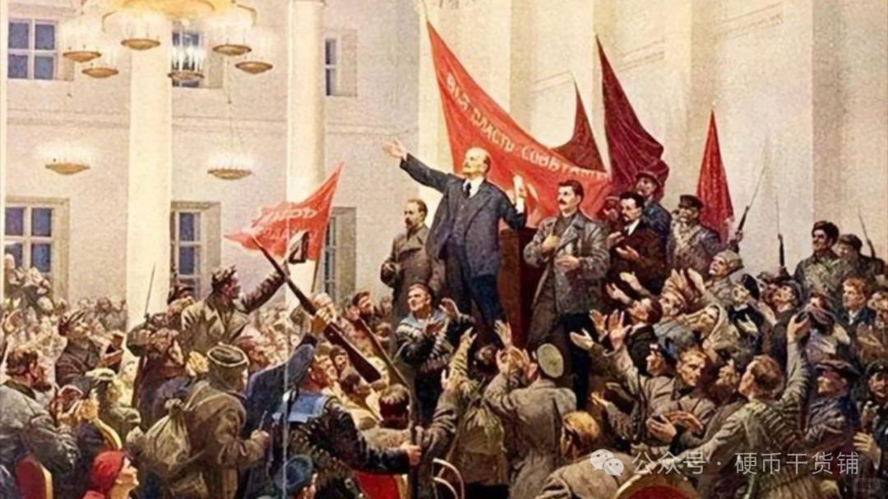

十月革命：一声炮响，真的是 “轻松夺权” 吗？
文字与图片版权归各自权利人所有。 查看公众号原文 ↗
提到十月革命，很多人的印象都是“一声炮响，革命成功”——彼得格勒武装起义爆发，阿芙乐尔号巡洋舰发出进攻的信号，红军战士攻占冬宫，资产阶级临时政府被推翻，苏维埃政权建立，一切都显得那么顺利，仿佛一场“轻松夺权”的政变。但历史的真相，从来都不是这么简单。1917年11月7日（俄历10月25日），十月革命爆发，这场革命，不是一场偶然的“少数人政变”，也不是一次“轻松夺权”的胜利，而是布尔什维克党长期准备、广大民众积极参与的结果，是临时政府自身腐朽、民心尽失后的必然结局。它的背后，有周密的策划，有激烈的战斗，有复杂的权力博弈，更有亿万民众对和平、土地、温饱的迫切渴望。

首先，我们必须澄清一个历史迷思：十月革命，不是“少数人政变”，而是民心所向。上一期我们说到，二月革命后成立的资产阶级临时政府，被战争、土地、饥饿三大死结牢牢束缚，早已失去了民众的支持。临时政府坚持继续参加第一次世界大战，导致士兵伤亡惨重、民生凋敝；拒绝推行土地改革，让农民的诉求得不到任何回应；无法解决粮食短缺问题，让普通民众陷入饥饿的折磨。而布尔什维克党提出的“停止战争、没收地主土地、实现面包自由”的口号，精准契合了广大民众的核心利益，得到了工人、农民、士兵的广泛支持。到1917年10月，布尔什维克党已经拥有了数十万党员，控制了彼得格勒、莫斯科等大城市的苏维埃政权，掌握了大部分的工人武装和士兵力量。当时的俄国，绝大多数民众都站在了布尔什维克党的一边，他们渴望通过革命，推翻临时政府，结束混乱与苦难，迎来新的生活。因此，十月革命，不是少数人的冒险，而是亿万民众的共同选择，是民心与秩序真空之下，必然发生的革命。

其次，十月革命的胜利，离不开周密的策划与准备，绝非“仓促起兵”。列宁归来后，通过《四月提纲》为革命指明了方向，布尔什维克党开始积极准备武装起义，积蓄力量。1917年10月10日，布尔什维克党中央召开秘密会议，列宁主持会议，明确提出了发动武装起义、推翻临时政府的决议。会议成立了起义领导机构——军事革命委员会，由托洛茨基担任主席，负责统筹起义的各项事宜，制定详细的起义计划。

军事革命委员会成立后，立即展开了紧张的准备工作：一方面，深入工人和士兵中间，进行宣传动员，组织工人赤卫队和革命士兵，加强武装力量的训练；另一方面，密切关注临时政府的动向，收集情报，制定详细的进攻计划，确定了以攻占冬宫、逮捕临时政府成员为核心的起义目标。此时的临时政府，虽然已经摇摇欲坠，但依然掌握着一定的武装力量，控制着冬宫等关键据点。临时政府得知布尔什维克党准备发动武装起义的消息后，也采取了一系列应对措施：加强冬宫的防御，调集军队驻守，试图阻止起义的爆发；同时，下令逮捕布尔什维克党的领导人，企图扼杀革命于摇篮之中。但临时政府的这些措施，早已无济于事。此时的临时政府，已经失去了军队的支持，驻守冬宫的士兵，大多对临时政府不满，很多人甚至暗中支持布尔什维克党，根本没有心思抵抗；而布尔什维克党的武装力量，在广大民众的支持下，迅速壮大，已经具备了发动起义、推翻临时政府的实力。1917年11月6日（俄历10月24日）深夜，彼得格勒的街头一片寂静，一场惊心动魄的武装起义，悄然拉开了序幕。布尔什维克党领导的工人赤卫队和革命士兵，按照预定计划，迅速占领了彼得格勒的火车站、邮电局、银行、发电厂等关键据点，控制了整个城市的交通、通讯和电力，切断了临时政府的外援和退路。

此时，只剩下冬宫，还被临时政府的残余势力控制着。冬宫，是临时政府的所在地，也是俄国封建贵族的象征，这里防御严密，驻守着临时政府的卫队和部分忠于临时政府的军队，想要攻占冬宫，并不是一件容易的事情。接下来，就是大家熟知的“阿芙乐尔号巡洋舰鸣炮”——11月7日（俄历10月25日）晚9时45分，阿芙乐尔号巡洋舰按照军事革命委员会的命令，向冬宫发出了进攻的信号，一声炮响，划破了彼得格勒的夜空，也拉开了攻占冬宫的序幕。很多人认为，阿芙乐尔号的炮声，只是象征性的，并没有真正轰击冬宫，但事实上，当时的战斗，远比我们想象的要激烈。在阿芙乐尔号炮声的鼓舞下，工人赤卫队和革命士兵们，奋勇向前，向冬宫发起了猛烈的进攻。冬宫的防御工事虽然坚固，但驻守的士兵大多无心抵抗，很多人纷纷放下武器，投降起义军；而起义军的士气高涨，源源不断地冲向冬宫，突破了一道又一道的防御工事。战斗一直持续到深夜，起义军终于攻占了冬宫的大门，冲进了冬宫内部，与临时政府的残余势力展开了激烈的巷战。最终，起义军彻底击败了临时政府的卫队，逮捕了临时政府的大部分成员，只有总理克伦斯基，趁着混乱，化妆逃跑，资产阶级临时政府，彻底被推翻。11月7日深夜，全俄苏维埃第二次代表大会在彼得格勒召开，大会宣布，推翻资产阶级临时政府，建立无产阶级专政的苏维埃政权，列宁当选为苏维埃政府主席，世界上第一个社会主义国家，正式诞生。

回顾十月革命的全过程，我们不难发现，这场革命，从来都不是“轻松夺权”。它有周密的策划，有激烈的战斗，有无数革命战士的牺牲，更有广大民众的积极参与。它的胜利，不是偶然，而是必然——是临时政府自身腐朽、民心尽失的必然结果，是布尔什维克党顺应时代潮流、代表民众利益的必然结果，是俄国人民渴望结束混乱、追求幸福生活的必然结果。下一期，我们走进苏联历史上最艰难的生死考验期。苏维埃政权成立后，并没有迎来和平与稳定，反而陷入了内外交困的绝境——国内白军叛乱，国外帝国主义武装干涉，再加上肆虐的饥荒，红色政权如何坚守火种、度过最危险的三年？